Last updated: 2018-10-02
workflowr checks: (Click a bullet for more information) ✖ R Markdown file: uncommitted changes
The R Markdown file has unstaged changes. To know which version of the R Markdown file created these results, you’ll want to first commit it to the Git repo. If you’re still working on the analysis, you can ignore this warning. When you’re finished, you can run wflow_publish to commit the R Markdown file and build the HTML.
✔ Environment: empty
Great job! The global environment was empty. Objects defined in the global environment can affect the analysis in your R Markdown file in unknown ways. For reproduciblity it’s best to always run the code in an empty environment.
✔ Seed:
set.seed(20180501)
The command set.seed(20180501) was run prior to running the code in the R Markdown file. Setting a seed ensures that any results that rely on randomness, e.g. subsampling or permutations, are reproducible.
✔ Session information: recorded
Great job! Recording the operating system, R version, and package versions is critical for reproducibility.
✔ Repository version: de731cb
wflow_publish or wflow_git_commit). workflowr only checks the R Markdown file, but you know if there are other scripts or data files that it depends on. Below is the status of the Git repository when the results were generated:
Ignored files:
Ignored: .Rhistory
Ignored: .Rproj.user/
Ignored: log/
Untracked files:
Untracked: analysis/binom.Rmd
Untracked: analysis/glm.Rmd
Untracked: analysis/overdis.Rmd
Untracked: analysis/smashtutorial.Rmd
Untracked: analysis/test.Rmd
Untracked: data/chipexo_examples/
Untracked: data/chipseq_examples/
Untracked: data/treas_bill.csv
Untracked: docs/figure/smashtutorial.Rmd/
Untracked: docs/figure/test.Rmd/
Unstaged changes:
Modified: analysis/ashpmean.Rmd
Modified: analysis/missing.Rmd
Modified: analysis/nugget.Rmd
Modified: analysis/sigma2.Rmd
To recap, the model we are considering is \(Y_t=\mu_t+u_t+\epsilon_t\) where \(u_t\sim N(0,\sigma^2)\) and \(\epsilon_t\sim N(0,s_t^2)\).
In previous analysis, we assume \(\sigma\) is known so when estimating \(\mu_t\), we simply plug \(\sigma\) in the smash.gaus function. However, in practice we don’t know the \(\sigma\).
Note:
If sigma is NULL in smash.gaus, then smash.gaus runs 1-2-1 of the algorithm in paper. If v.est=F, then it returns estimated \(\mu_t\) from the last 1. If v.est=T, then it runs 2 one more time.
If sigma is given, then it runs 1 to give \(\hat\mu_t\). If v.est=T, then it runs 2 one more time. So: even if sigma is given, smash.gaus could still estimate it.
Names of the methods are marked in bold for convenience.
When estimating \(\mu_t\), what we actually need is \(\sigma^2+s_t^2\) for smash.gaus.
Method 1(smashu): We can simply feed \(y_t\) to smash.gaus then get estimated \(\mu_t\) and \(\sigma^2+s_t^2\). This is simple and easy. But this method does not take advantage of known \(s_t^2\).
Method 2(rmad): Using “running MAD”(RMAD) method: \(1.4826\times MAD\). MAD stands for median absolute deviation, \(MAD(x)=median|x-median(x)|\). (For normal distribution \(x\sim N(\mu,\sigma^2)\), \(MAD(x)=\sigma MAD(z)\), where \(z\sim N(0,1)\) so \(\sigma=\frac{MAD(x)}{MAD(z)}=1.4826\times MAD(x)\).(\(1/[\Phi^{-1}(3/4)] \approx 1.4826\) )). One advantage of MAD is the robustness. In Xing\(\&\)Stephens(2016), simulations show that SMASH outperforms RMA. So we won’t use rmad in the experiments.
Method 1(moment): It’s easy to show that \(E(Y_t-Y_{t+1})^2=s_t^2+s_{t+1}^2+2\sigma^2\). Similarly, \(E(Y_t-Y_{t-1})^2=s_t^2+s_{t-1}^2+2\sigma^2\). Combining two equations and solving for \(\sigma^2\), we have a natural way to estimate it: \(\hat\sigma^2_t=\frac{((Y_t-Y_{t+1})^2+(Y_t-Y_{t+1})^2-2s_t^2-s_{t-1}^2-s_{t+1}^2)}{4}\) for each \(t\). The estimate of \(\sigma^2\) is given by the mean of \(\hat\sigma^2_t\). This is similar to the initilization step in smash paper. We won’t include this method in the experiments.
Method 2: This method follows the same idea for estimating variance in Xing\(\&\)Stephens(2016). Since \(Y_t-\mu_t\sim N(0,\sigma^2+s_t^2)\), we define \(Z_t^2=(Y_t-\mu_t)^2\sim (\sigma^2+s_t^2)\chi_1^2\). \(E(z_t^2)=\sigma^2+s_t^2\) and an estimate of \(var(Z_t^2)\) is \(\frac{2}{3}Z_t^4\). It’s then transferred to a mean estimating problem: \(Z_t^2=\sigma^2+s_t^2+N(0,\frac{4}{3}Z_t^4)\). Let \(\tilde Z_t^2=Z_t^2-s_t^2\), then \(\tilde Z_t^2=\sigma^2+N(0,\frac{2}{3}Z_t^4)\). We can then use maximum likelihood estimation(mle) estimate \(\sigma^2\).
In this section, we examine the performance of method 2 for estimating \(\sigma\). In the experiments, \(n=512\), SNR=3, mean function spike with range (0.2,0.8), \(s_t\) has range (0.015,0.045) and \(\sigma=0.02\).
Since what we eventually need is \(\sqrt(\sigma^2+s_t^2)\), we compare the following methods: 1. Estimate \(\sigma^2\) first then add to \(s_t^2\); 2. Estimate \(\sqrt(\sigma^2+s_t^2)\) directly using smash. The measure of accuracy is mean squared error. We also compared the mean estimation based the estimated variance.
library(smashrgen)
library(ggplot2)#simulations
# Create the baseline mean function. Here we use the "spikes" function.
n = 2^9
t = 1:n/n
spike.f = function(x) (0.75 * exp(-500 * (x - 0.23)^2) +
1.5 * exp(-2000 * (x - 0.33)^2) +
3 * exp(-8000 * (x - 0.47)^2) +
2.25 * exp(-16000 * (x - 0.69)^2) +
0.5 * exp(-32000 * (x - 0.83)^2))
mu.s = spike.f(t)
# Scale the signal to be between 0.2 and 0.8.
mu.t = (1 + mu.s)/5
plot(mu.t, type = "l",main='main function')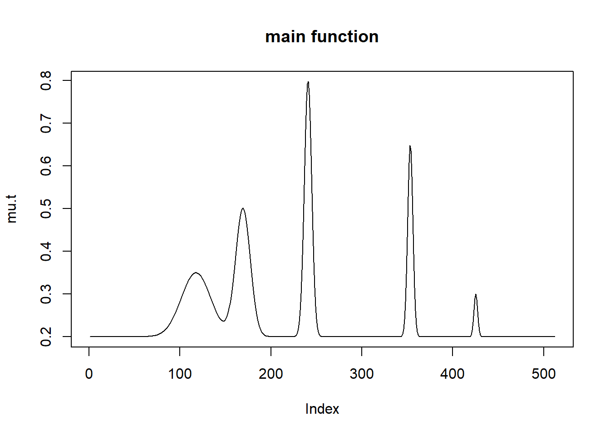
# Create the baseline variance function. (The function V2 from Cai &
# Wang 2008 is used here.)
var.fn = (1e-04 + 4 * (exp(-550 * (t - 0.2)^2) +
exp(-200 * (t - 0.5)^2) + exp(-950 * (t - 0.8)^2)))/1.35+1
#plot(var.fn, type = "l")
# Set the signal-to-noise ratio.
rsnr = sqrt(3)
sigma.t = sqrt(var.fn)/mean(sqrt(var.fn)) * sd(mu.t)/rsnr^2
sigma=0.02
st=sqrt(sigma.t^2-sigma^2)
plot(st, type = "l", main='s_t')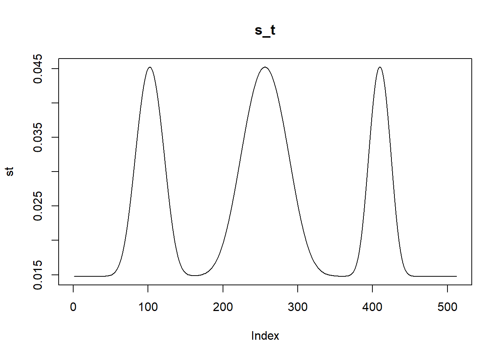
mle.s=c()
mle.tm=c()
mle.sg1=c()
mle.sg2=c()
mle.sg3=c()
mle.sg4=c()
s.p.st=c()
s.p.st.mu=c()
sst=c()
sst.mu=c()
set.seed(12345)
for (i in 1:100) {
y=mu.t+rnorm(n,0,sigma)+rnorm(n,0,st)
mle.s[i]=sigma_est(y,st=st)
mle.sg1[i]=smash.gaus.gen(y,st,niters = 1)$sd.hat
mle.tm[i]=sigma_est(y,mu=mu.t,st=st)
mle.sg2[i]=smash.gaus.gen(y,st,niters = 2)$sd.hat
mle.sg3[i]=smash.gaus.gen(y,st,niters = 3)$sd.hat
mle.sg4[i]=smash.gaus.gen(y,st,niters = 4)$sd.hat
smash.est=smash.gaus(y,joint=T)
##s+st,sst
s.p.st=rbind(s.p.st,sqrt(mle.sg1[i]^2+st^2))
sst=rbind(sst,sqrt(smash.est$var.res))
##mean
s.p.st.mu=rbind(s.p.st.mu,smash.gaus(y,s.p.st[i,]))
sst.mu=rbind(sst.mu,smash.est$mu.res)
}
boxplot(cbind(mle.tm,mle.s,mle.sg1,mle.sg2,mle.sg3,mle.sg4),ylab='sigma hat')
abline(h=sigma,lty=2)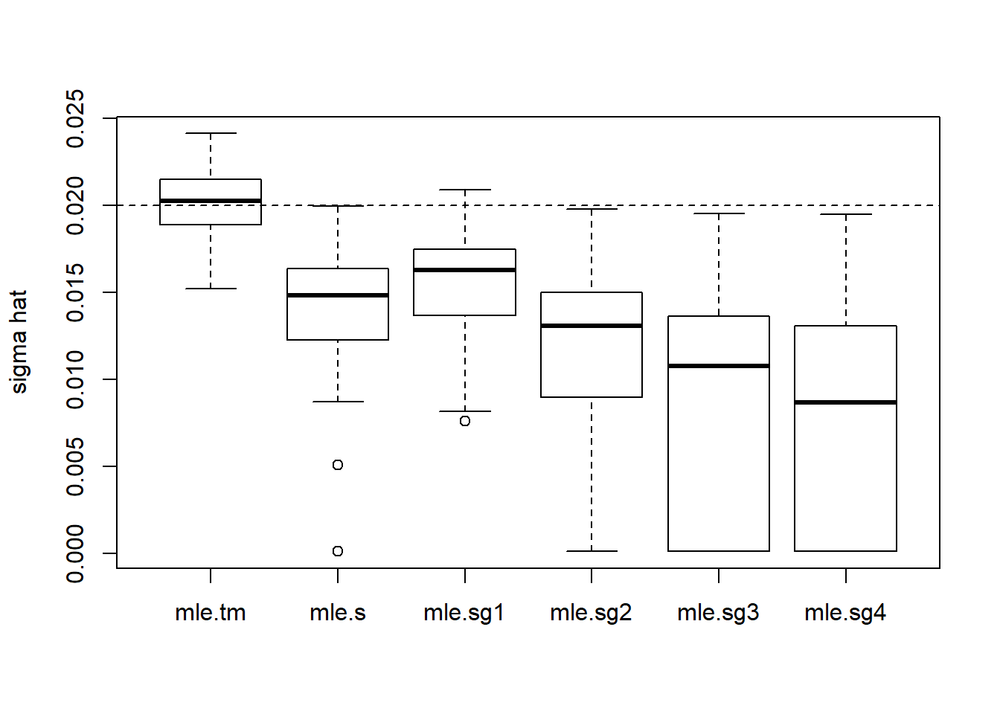
s.p.st.mse=apply(s.p.st, 1, function(x){mean((x-sigma.t)^2)})
sst.mse=apply(sst, 1, function(x){mean((x-sigma.t)^2)})
boxplot(cbind(s.p.st.mse,sst.mse))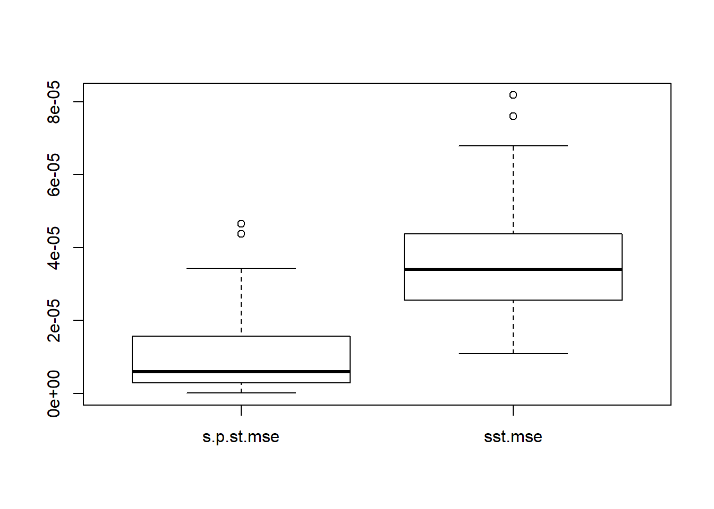
plot(s.p.st[1,],type='l',ylim=c(0.01,0.06),ylab='sigma^2+s_t^2',main='An example of estimated total variance')
lines(sst[1,],col=2)
lines(sigma.t,col='grey80')
legend('topleft',c('sigma+s_t','smashu','true'),col=c(1,2,'grey80'),lty=c(1,1,1))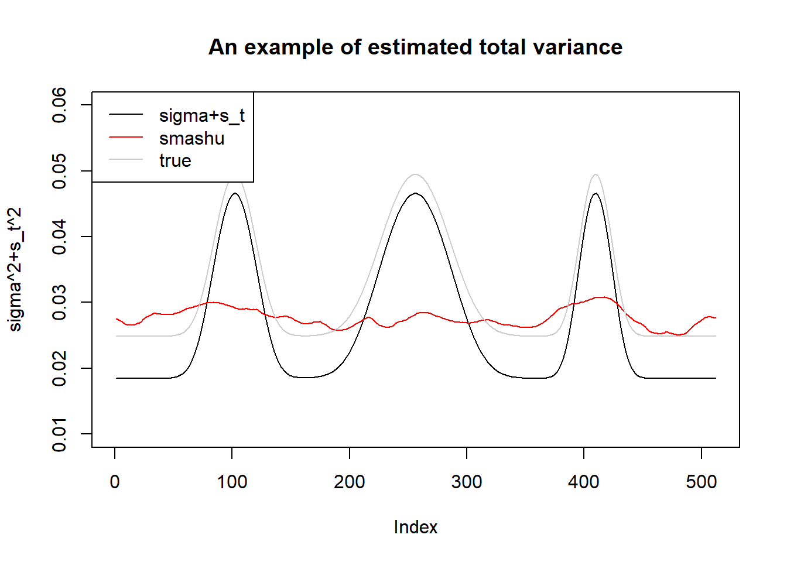
s.p.st.mu.mse=apply(s.p.st.mu, 1, function(x){mean((x-mu.t)^2)})
sst.mu.mse=apply(sst.mu, 1, function(x){mean((x-mu.t)^2)})
boxplot(cbind(s.p.st.mu.mse,sst.mu.mse))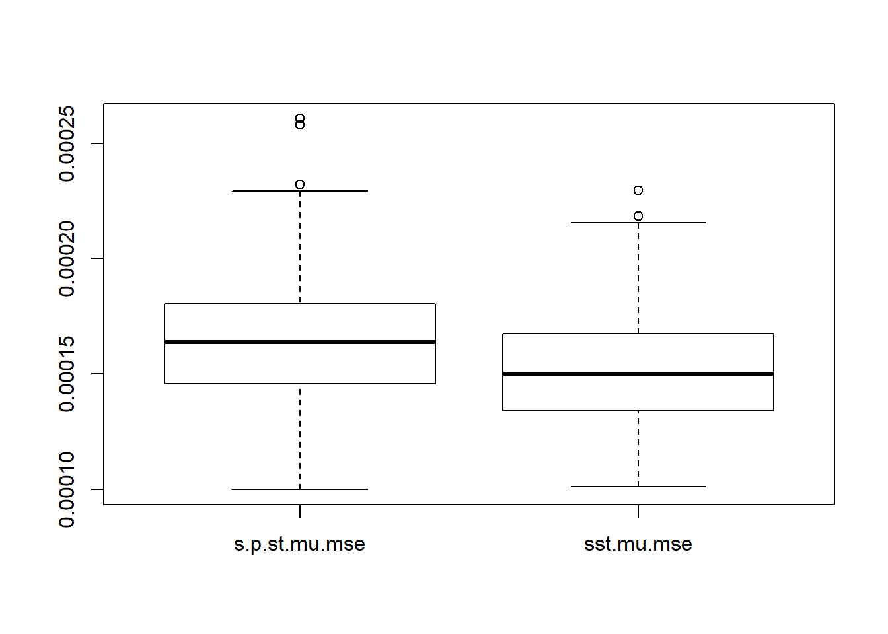
plot(s.p.st.mu[1,],type='l',ylim=c(0.15,0.8),ylab = 'mu',main='An example of mean estimation')
lines(sst.mu[1,],col=2)
lines(mu.t,col='grey80')
legend('topleft',c('sigma+s_t','smashu','true'),col=c(1,2,'grey80'),lty=c(1,1,1))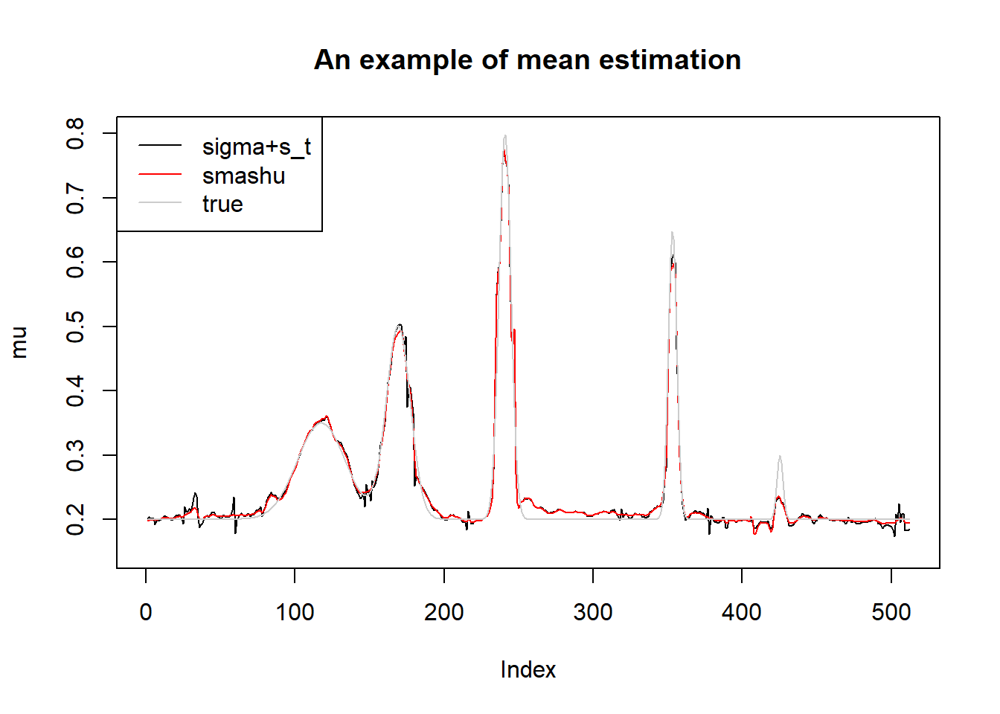
Given the true mean, method 2 for estimating \(\sigma^2\) gives mean sigma estimations very close to true sigma. When the true mean is unknown, we can see one iteration of smash.gaus.gen gives best estimation.
Estimating \(\sigma^2\) then adding to \(s_t^2\) give better estimation of total variance. However,
smash.gaus gives better mean estimation under worse variance estimation.
Now let’s reduce sample size from 512 to 128.
n = 128
t = 1:n/n
spike.f = function(x) (0.75 * exp(-500 * (x - 0.23)^2) +
1.5 * exp(-2000 * (x - 0.33)^2) +
3 * exp(-8000 * (x - 0.47)^2) +
2.25 * exp(-16000 * (x - 0.69)^2) +
0.5 * exp(-32000 * (x - 0.83)^2))
mu.s = spike.f(t)
# Scale the signal to be between 0.2 and 0.8.
mu.t = (1 + mu.s)/5
#plot(mu.t, type = "l",main='main function')
# Create the baseline variance function. (The function V2 from Cai &
# Wang 2008 is used here.)
var.fn = (1e-04 + 4 * (exp(-550 * (t - 0.2)^2) +
exp(-200 * (t - 0.5)^2) + exp(-950 * (t - 0.8)^2)))/1.35+1
#plot(var.fn, type = "l")
# Set the signal-to-noise ratio.
rsnr = sqrt(3)
sigma.t = sqrt(var.fn)/mean(sqrt(var.fn)) * sd(mu.t)/rsnr^2
sigma=0.02
st=sqrt(sigma.t^2-sigma^2)
#plot(st, type = "l", main='s_t')
mle.s=c()
mle.tm=c()
mle.sg1=c()
mle.sg2=c()
mle.sg3=c()
mle.sg4=c()
s.p.st=c()
s.p.st.mu=c()
sst=c()
sst.mu=c()
set.seed(12345)
for (i in 1:100) {
y=mu.t+rnorm(n,0,sigma)+rnorm(n,0,st)
mle.s[i]=sigma_est(y,st=st)
mle.sg1[i]=smash.gaus.gen(y,st,niters = 1)$sd.hat
mle.tm[i]=sigma_est(y,mu=mu.t,st=st)
mle.sg2[i]=smash.gaus.gen(y,st,niters = 2)$sd.hat
mle.sg3[i]=smash.gaus.gen(y,st,niters = 3)$sd.hat
mle.sg4[i]=smash.gaus.gen(y,st,niters = 4)$sd.hat
smash.est=smash.gaus(y,joint=T)
##s+st,sst
s.p.st=rbind(s.p.st,sqrt(mle.sg1[i]^2+st^2))
sst=rbind(sst,sqrt(smash.est$var.res))
##mean
s.p.st.mu=rbind(s.p.st.mu,smash.gaus(y,s.p.st[i,]))
sst.mu=rbind(sst.mu,smash.est$mu.res)
}
boxplot(cbind(mle.tm,mle.s,mle.sg1,mle.sg2,mle.sg3,mle.sg4),ylab='sigma hat')
abline(h=sigma,lty=2)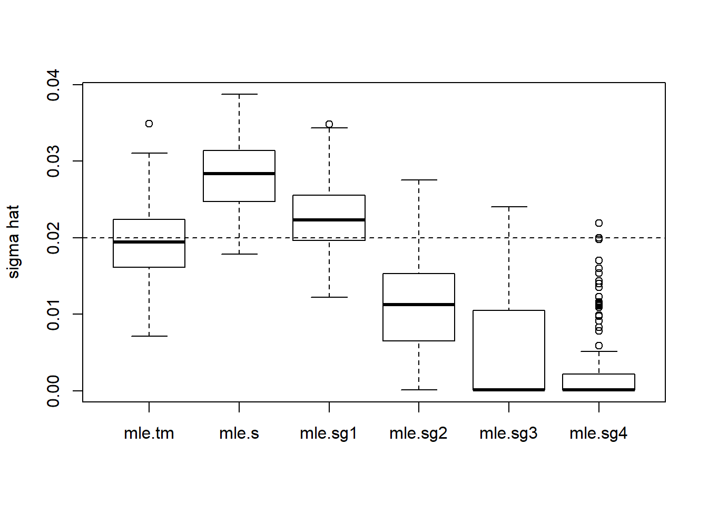
s.p.st.mse=apply(s.p.st, 1, function(x){mean((x-sigma.t)^2)})
sst.mse=apply(sst, 1, function(x){mean((x-sigma.t)^2)})
boxplot(cbind(s.p.st.mse,sst.mse))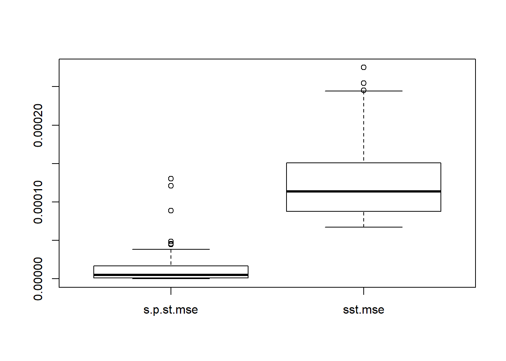
plot(s.p.st[1,],type='l',ylim=c(0.01,0.06),ylab='sigma^2+s_t^2',main='An example of estimated total variance')
lines(sst[1,],col=2)
lines(sigma.t,col='grey80')
legend('topleft',c('sigma+s_t','smashu','true'),col=c(1,2,'grey80'),lty=c(1,1,1))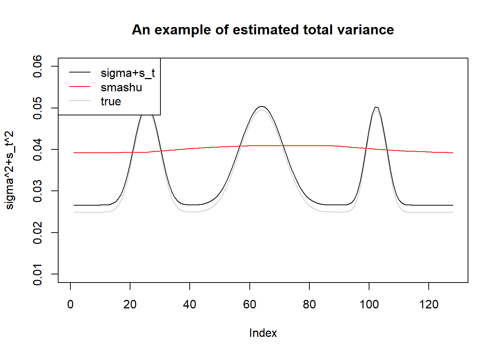
s.p.st.mu.mse=apply(s.p.st.mu, 1, function(x){mean((x-mu.t)^2)})
sst.mu.mse=apply(sst.mu, 1, function(x){mean((x-mu.t)^2)})
boxplot(cbind(s.p.st.mu.mse,sst.mu.mse))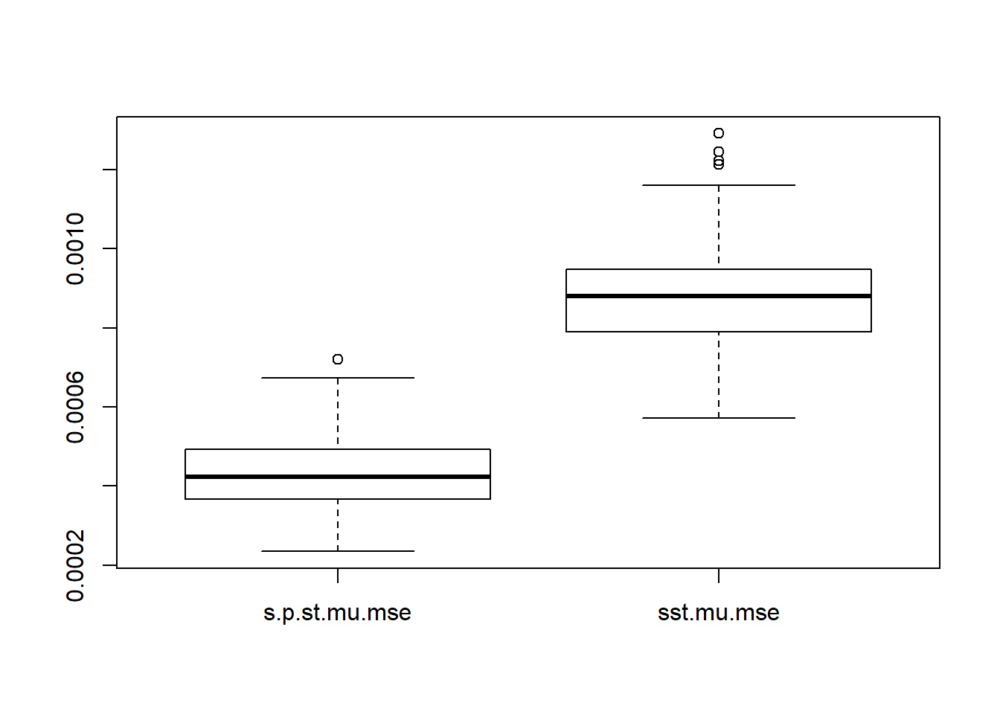
plot(s.p.st.mu[1,],type='l',ylim=c(0.15,0.8),ylab = 'mu',main='An example of mean estimation')
lines(sst.mu[1,],col=2)
lines(mu.t,col='grey80')
legend('topleft',c('sigma+s_t','smashu','true'),col=c(1,2,'grey80'),lty=c(1,1,1))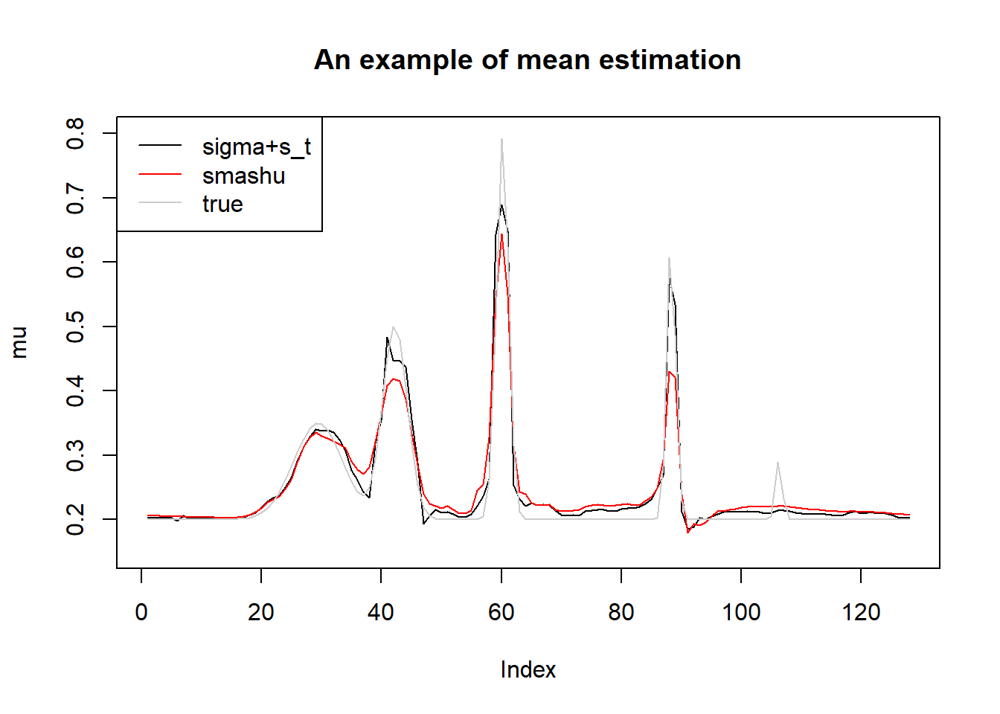
Still, one iteration of smash.gaus.gen gives best estimation. Estimating \(\sigma^2\) then adding to \(s_t^2\) give better estimation of total variance. This time, smash.gaus gives smaller MSE under better variance estimation.
One assumption of smash is that the variance has spatial features. We now check the performance if this assumption is violated.
n=512
t = 1:n/n
spike.f = function(x) (0.75 * exp(-500 * (x - 0.23)^2) +
1.5 * exp(-2000 * (x - 0.33)^2) +
3 * exp(-8000 * (x - 0.47)^2) +
2.25 * exp(-16000 * (x - 0.69)^2) +
0.5 * exp(-32000 * (x - 0.83)^2))
mu.s = spike.f(t)
# Scale the signal to be between 0.2 and 0.8.
mu.t = (1 + mu.s)/5
#plot(mu.t, type = "l",main='main function')
set.seed(12345)
var.fn=runif(n,0.3,1)/10
# Set the signal-to-noise ratio.
rsnr = sqrt(3)
sigma.t = sqrt(var.fn)/mean(sqrt(var.fn)) * sd(mu.t)/rsnr^2
sigma=0.02
st=sqrt(sigma.t^2-sigma^2)
plot(st, type = "l", main='s_t')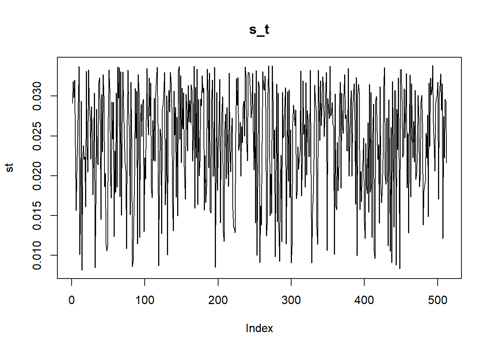
mle.s=c()
mle.tm=c()
mle.sg1=c()
mle.sg2=c()
mle.sg3=c()
mle.sg4=c()
s.p.st=c()
s.p.st.mu=c()
sst=c()
sst.mu=c()
for (i in 1:100) {
y=mu.t+rnorm(n,0,sigma)+rnorm(n,0,st)
mle.s[i]=sigma_est(y,st=st)
mle.sg1[i]=smash.gaus.gen(y,st,niters = 1)$sd.hat
mle.tm[i]=sigma_est(y,mu=mu.t,st=st)
mle.sg2[i]=smash.gaus.gen(y,st,niters = 2)$sd.hat
mle.sg3[i]=smash.gaus.gen(y,st,niters = 3)$sd.hat
mle.sg4[i]=smash.gaus.gen(y,st,niters = 4)$sd.hat
smash.est=smash.gaus(y,joint=T)
##s+st,sst
s.p.st=rbind(s.p.st,sqrt(mle.sg1[i]^2+st^2))
sst=rbind(sst,sqrt(smash.est$var.res))
##mean
s.p.st.mu=rbind(s.p.st.mu,smash.gaus(y,s.p.st[i,]))
sst.mu=rbind(sst.mu,smash.est$mu.res)
}
boxplot(cbind(mle.tm,mle.s,mle.sg1,mle.sg2,mle.sg3,mle.sg4),ylab='sigma hat')
abline(h=sigma,lty=2)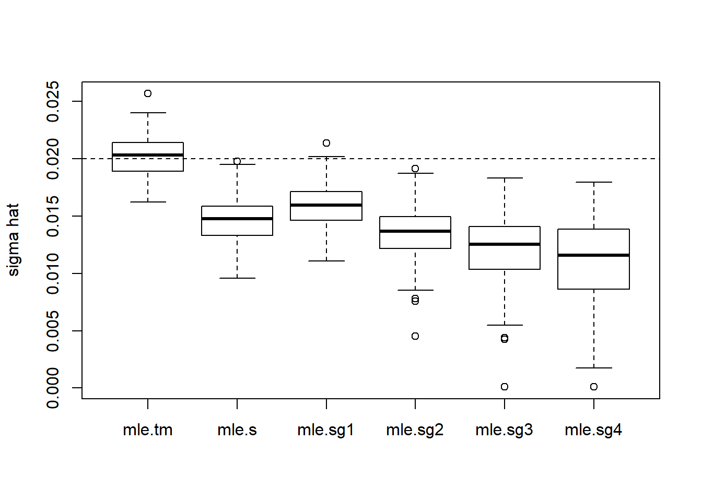
s.p.st.mse=apply(s.p.st, 1, function(x){mean((x-sigma.t)^2)})
sst.mse=apply(sst, 1, function(x){mean((x-sigma.t)^2)})
boxplot(cbind(s.p.st.mse,sst.mse))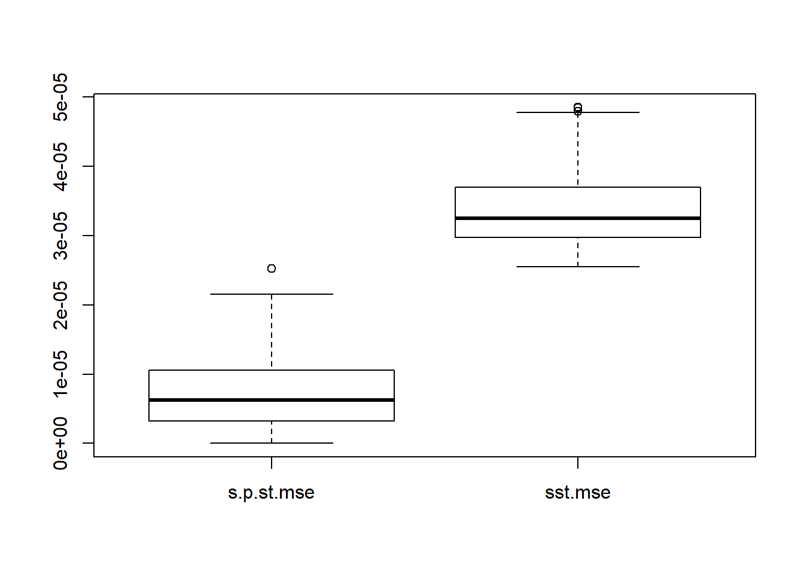
plot(s.p.st[1,],type='l',ylim=c(0.01,0.06),ylab='sigma^2+s_t^2',main='An example of estimated total variance')
lines(sst[1,],col=2)
lines(sigma.t,col='grey80')
legend('topleft',c('sigma+s_t','smashu','true'),col=c(1,2,'grey80'),lty=c(1,1,1))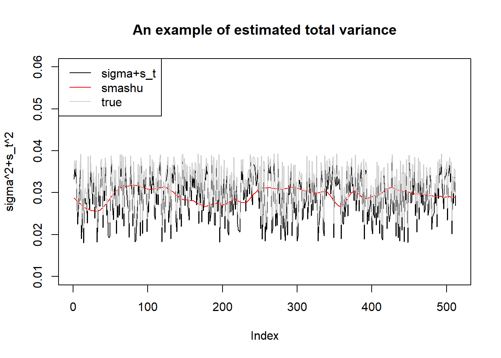
s.p.st.mu.mse=apply(s.p.st.mu, 1, function(x){mean((x-mu.t)^2)})
sst.mu.mse=apply(sst.mu, 1, function(x){mean((x-mu.t)^2)})
boxplot(cbind(s.p.st.mu.mse,sst.mu.mse))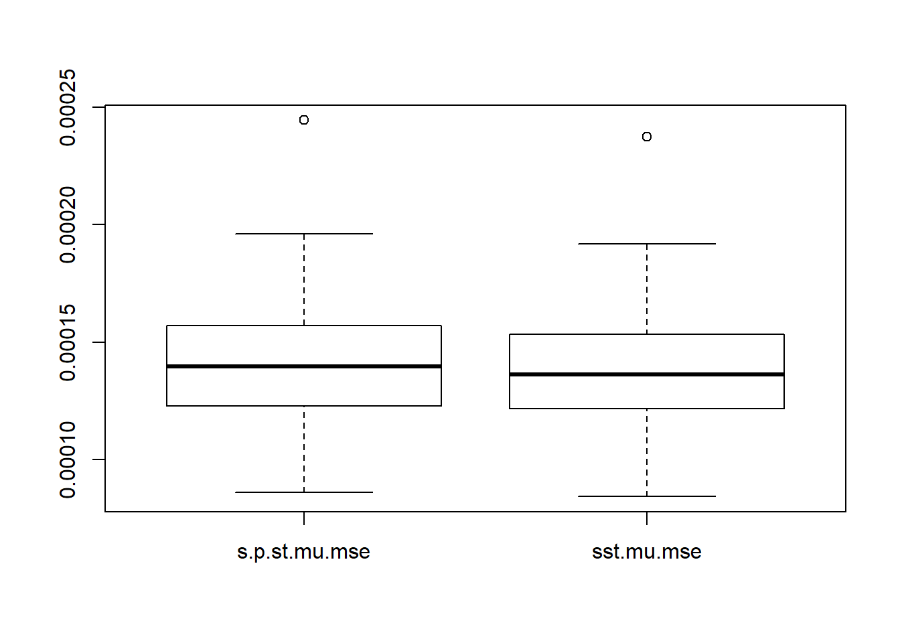
plot(s.p.st.mu[1,],type='l',ylim=c(0.15,0.8),ylab = 'mu',main='An example of mean estimation')
lines(sst.mu[1,],col=2)
lines(mu.t,col='grey80')
legend('topleft',c('sigma+s_t','smashu','true'),col=c(1,2,'grey80'),lty=c(1,1,1))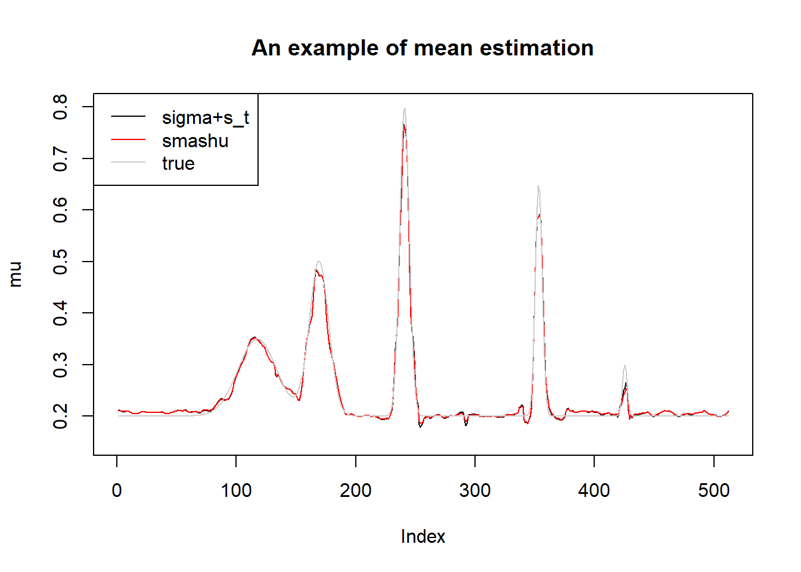
Again, though the differences in estimating the total variance, the mean estimations are very similar.
sessionInfo()R version 3.4.0 (2017-04-21)
Platform: x86_64-w64-mingw32/x64 (64-bit)
Running under: Windows 10 x64 (build 17134)
Matrix products: default
locale:
[1] LC_COLLATE=English_United States.1252
[2] LC_CTYPE=English_United States.1252
[3] LC_MONETARY=English_United States.1252
[4] LC_NUMERIC=C
[5] LC_TIME=English_United States.1252
attached base packages:
[1] stats graphics grDevices utils datasets methods base
other attached packages:
[1] ggplot2_2.2.1 smashrgen_0.1.0 wavethresh_4.6.8 MASS_7.3-47
[5] caTools_1.17.1 ashr_2.2-7 smashr_1.1-5
loaded via a namespace (and not attached):
[1] Rcpp_0.12.18 plyr_1.8.4 compiler_3.4.0
[4] git2r_0.21.0 workflowr_1.0.1 R.methodsS3_1.7.1
[7] R.utils_2.6.0 bitops_1.0-6 iterators_1.0.8
[10] tools_3.4.0 digest_0.6.13 tibble_1.3.3
[13] evaluate_0.10 gtable_0.2.0 lattice_0.20-35
[16] rlang_0.1.2 Matrix_1.2-9 foreach_1.4.4
[19] yaml_2.1.19 parallel_3.4.0 stringr_1.3.0
[22] knitr_1.20 REBayes_1.3 rprojroot_1.3-2
[25] grid_3.4.0 data.table_1.10.4-3 rmarkdown_1.8
[28] magrittr_1.5 whisker_0.3-2 backports_1.0.5
[31] scales_0.4.1 codetools_0.2-15 htmltools_0.3.5
[34] assertthat_0.2.0 colorspace_1.3-2 stringi_1.1.6
[37] Rmosek_8.0.69 lazyeval_0.2.1 munsell_0.4.3
[40] doParallel_1.0.11 pscl_1.5.2 truncnorm_1.0-8
[43] SQUAREM_2017.10-1 R.oo_1.21.0 This reproducible R Markdown analysis was created with workflowr 1.0.1